アクセシビリティとは
情報のバリアフリー。利用する全ての人が、心身の機能や利用する環境に関係なく、提供されている情報やサービスを利用できること

アクセス
JR神戸駅から神戸市産業振興センターまでの道順（地下から）
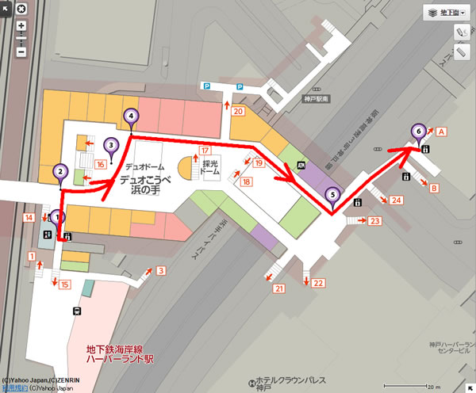
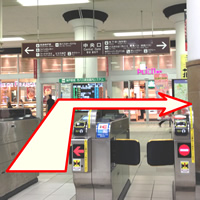1 JR神戸駅下車。中央口出て右。
2 突き当りにエスカレーターもしくは階段を降りてください。
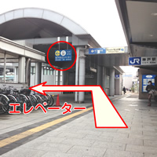3 エレベーターをご利用の場合は突き当りを右に行ってください。
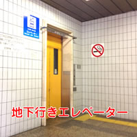4 エレベーターで地下1階に下りてください。
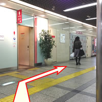5 エレベーターで降りられたら右にお進みください。
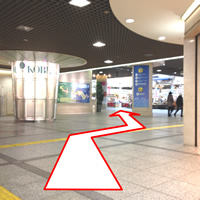6 10メートルほど進みますと広場（催事場）が見えます。広場を横切ってください。
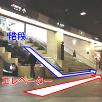7 エスカレーターもしくは階段を降り、広場（催事場）の左側を直進。
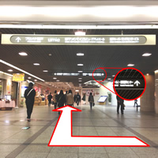8 途中に「産業振興センター」の表示板があります。
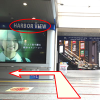9 突き当りに「HARBOR VIEW」スクリーンがあり、左に進んでください。
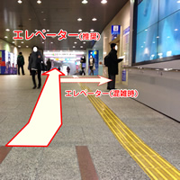10 少し坂になっています。※坂の途中に地上へのエレベーターがありますが、この先にあるのエレベーター（写真13）をご利用ください。
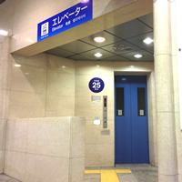11 産業振興センター手前のエレベーターです。
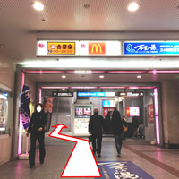12 坂を上り、左側を直進してください。
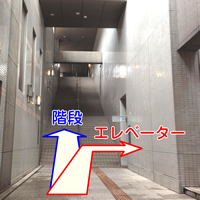13 突き当りに地上への階段と、右手にエレベーターがあります。
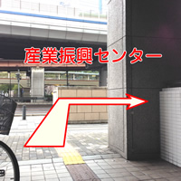14 エレベーターで1階に上がり、歩道に出て右に進んでください。※少しの段差あり
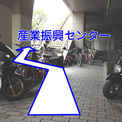15 階段を上がり、歩道に出て右に進んでください。※原付や自転車が多数止めてあります。
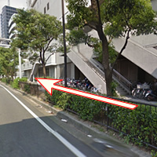16 100メートルほど直進してください。
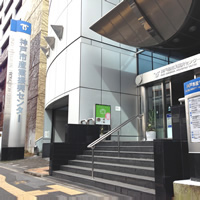17 到着です。入口を入ってすぐ右手にエレベーターがございます。10階にお越しください。
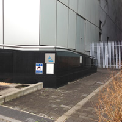18 建物手前にスロープがございますのでこちらもご利用ください。
会場：神戸市産業振興センター
住所：〒650-0044 神戸市中央区東川崎町1丁目8番4号（神戸ハーバーランド内）
電話番号：078-360-3200
懇親会場までの道順（オールドスパゲティファクトリー神戸店）
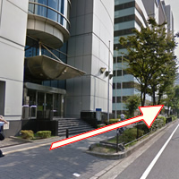1 産業振興センターを出て左に、一つ目の横断歩道まで進んでください。
 2 横断歩道手前を左に進んでください。
2 横断歩道手前を左に進んでください。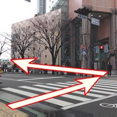3 左手に「UMIE」ショッピングモールが見えてきますので、その前の横断歩道を渡り、左に進んでください。
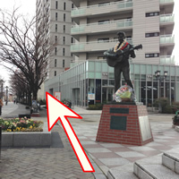4 途中、「エルヴィス・プレスリー像」があります。直進してください。
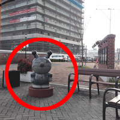5 「エルヴィス・プレスリー像」から100メートルほど直進すると「バイキンマン像」があります。そこを右に入ってください。
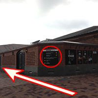6 煉瓦倉庫角にお店（オールドスパゲティファクトリー神戸店）の表示板があります。
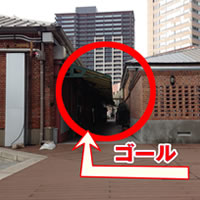7 表示板の次の角を右に進み、到着です。
会場：オールドスパゲティファクトリー神戸店
住所：〒650-0044 兵庫県神戸市中央区東川崎町1-5-5 煉瓦倉庫レストラン（神戸ハーバーランド内）
電話番号：078-360-3911